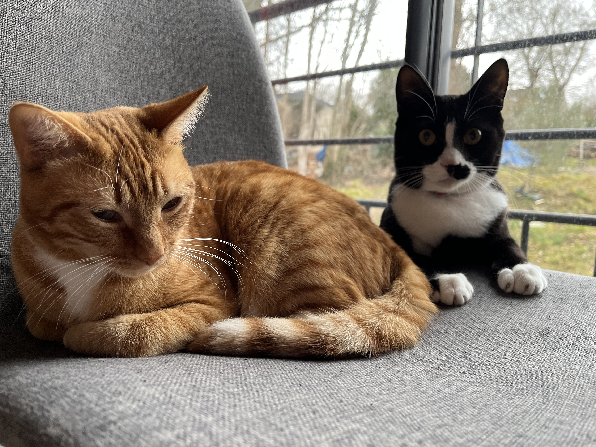

Nos chats
Noisette
- Pelage : Ecaille de tortue
- Yeux : Vert
- Age : 5an et demi
- Personnalité :
- Folle
- Capricieuse
- Ronronne et miaule à la fois pour demander des câlins
- Sexe : Femelle


"Je surveille tout ce qui bouge !"

"Après avoir mis de l'eau de javel pour nettoyer ..."
Solo
- Pelage : Roux
- Yeux : Vert
- Age : 1 an et demi
- Personnalité :
- Joueur
- Aime courir dans l'herbe
- Aime mordre
- Sexe : Mâle

Nemo
- Pelage : Noir
- Yeux : Vert
- Age : 1 an et demi
- Personnalité :
- Peureux mais très calin quand il le veut
- Aime manger l'herbe
- Miaule bizzarement quand il voit un oiseau par la fenêtre
- Sexe : Mâle

Ils aiment jouer entre eux. Ils se bagarrent parfois pour s'amuser. Ils se lavent entre eux. Malgré son caractère peureux, Nemo est le dominant. Il se sert dans la nourriture de Solo. Les deux n'aiment pas être pris dans les bras. Ils aiment beaucoup le poulet et le thon.
